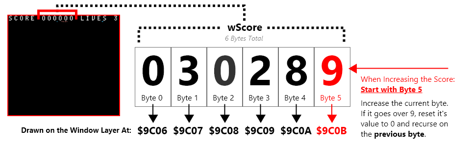

Heads Up Interface
The gameboy normally draws sprites over both the window and background, and the window over the background. In Galactic Armada, The background is vertically scrolling. This means the HUD (the score text and number) needs to be draw on the window, which is separate from the background.
On our HUD, we’ll draw both our score and our lives. We’ll also use STAT interrupts to make sure nothing covers the HUD.
STAT Interrupts & the window
The window is not enabled by default. We can enable the window using the LCDC register. RGBDS comes with constants that will help us.
⚠️ NOTE: The window can essentially be a copy of the background. The
LCDCF_WIN9C00|LCDCF_BG9800portion makes the background and window use different tilemaps when drawn. There’s only one problem. Since the window is drawn between sprites and the background. Without any extra effort, our scrolling background tilemap will be covered by our window. In addition, our sprites will be drawn over our hud. For this, we’ll need STAT interrupts. Fore more information on STAT interrupts, check out the pandocs: https://gbdev.io/pandocs/Interrupt_Sources.html

Using the STAT interrupt
One very popular use is to indicate to the user when the video hardware is about to redraw a given LCD line. This can be useful for dynamically controlling the SCX/SCY registers ($FF43/$FF42) to perform special video effects.
Example application: set LYC to WY, enable LY=LYC interrupt, and have the handler disable sprites. This can be used if you use the window for a text box (at the bottom of the screen), and you want sprites to be hidden by the text box.
With STAT interrupts, we can implement raster effects. in our case, we’ll enable the window and stop drawing sprites on the first 8 scanlines. Afterwards, we’ll show sprites and disable the window layer for the remaining scanlines. This makes sure nothing overlaps our HUD, and that our background is fully shown also.
Initiating & Disabling STAT interrupts
In our gameplay game state, at different points in time, we initialized and disabled interrupts. Here’s the logic for those functions in our “src/main/states/gameplay/hud.asm” file:
INCLUDE "src/main/utils/hardware.inc"
SECTION "Interrupts", ROM0
DisableInterrupts::
xor a
ldh [rSTAT], a
di
ret
InitStatInterrupts::
ld a, IEF_STAT
ldh [rIE], a
xor a
ldh [rIF], a
ei
; This makes our stat interrupts occur when the current scanline is equal to the rLYC register
ld a, STATF_LYC
ldh [rSTAT], a
; We'll start with the first scanline
; The first stat interrupt will call the next time rLY = 0
xor a
ldh [rLYC], a
ret
Defining STAT interrupts
Our actual STAT interrupts must be located at $0048. We’ll define different paths depending on what our LYC variable’s value is when executed.
; Define a new section and hard-code it to be at $0048.
SECTION "Stat Interrupt", ROM0[$0048]
StatInterrupt:
push af
; Check if we are on the first scanline
ldh a, [rLYC]
and a
jp z, LYCEqualsZero
LYCEquals8:
; Don't call the next stat interrupt until scanline 8
xor a
ldh [rLYC], a
; Turn the LCD on including sprites. But no window
ld a, LCDCF_ON | LCDCF_BGON | LCDCF_OBJON | LCDCF_OBJ16 | LCDCF_WINOFF | LCDCF_WIN9C00
ldh [rLCDC], a
jp EndStatInterrupts
LYCEqualsZero:
; Don't call the next stat interrupt until scanline 8
ld a, 8
ldh [rLYC], a
; Turn the LCD on including the window. But no sprites
ld a, LCDCF_ON | LCDCF_BGON | LCDCF_OBJOFF | LCDCF_OBJ16| LCDCF_WINON | LCDCF_WIN9C00
ldh [rLCDC], a
EndStatInterrupts:
pop af
reti;
That should be all it takes to get a properly drawn HUD. For more details, check out the code in the repo or ask questions on the gbdev discord server.
Keeping Score and Drawing Score on the HUD
To keep things simple, back in our gameplay game state, we used 6 different bytes to hold our score.Each byte will hold a value between 0 and 9, and represents a specific digit in the score. So it’s easy to loop through and edit the score number on the HUD: The First byte represents the left-most digit, and the last byte represents the right-most digit.

When the score increases, we’ll increase digits on the right. As they go higher than 9, we’ll reset back to 0 and increase the previous byte .
IncreaseScore::
; We have 6 digits, start with the right-most digit (the last byte)
ld c, 0
ld hl, wScore+5
IncreaseScore_Loop:
; Increase the digit
ld a, [hl]
inc a
ld [hl], a
; Stop if it hasn't gone past 0
cp 9
ret c
; If it HAS gone past 9
IncreaseScore_Next:
; Increase a counter so we can not go out of our scores bounds
inc c
ld a, c
; Check if we've gone over our scores bounds
cp 6
ret z
; Reset the current digit to zero
; Then go to the previous byte (visually: to the left)
ld a, 0
ld [hl], a
ld [hld], a
jp IncreaseScore_Loop
We can call that score whenever a bullet hits an enemy. This function however does not draw our score on the background. We do that the same way we drew text previously:
DrawScore::
; Our score has max 6 digits
; We'll start with the left-most digit (visually) which is also the first byte
ld c, 6
ld hl, wScore
ld de, $9C06 ; The window tilemap starts at $9C00
DrawScore_Loop:
ld a, [hli]
add 10 ; our numeric tiles start at tile 10, so add to 10 to each bytes value
ld [de], a
; Decrease how many numbers we have drawn
dec c
; Stop when we've drawn all the numbers
ret z
; Increase which tile we are drawing to
inc de
jp DrawScore_Loop
Because we’ll only ever have 3 lives, drawing our lives is much easier. The numeric characters in our text font start at 10, so we just need to put on the window, our lives plus 10.
DrawLives::
ld hl, wLives
ld de, $9C13 ; The window tilemap starts at $9C00
ld a, [hl]
add 10 ; our numeric tiles start at tile 10, so add 10 to each bytes value
ld [de], a
ret